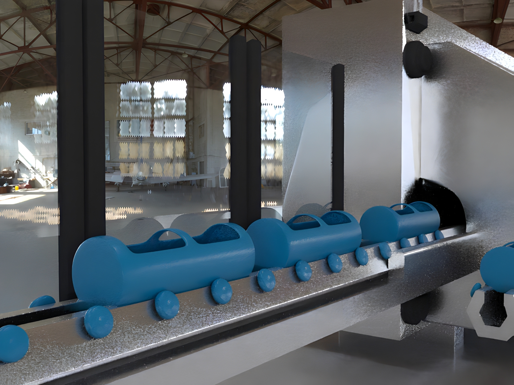
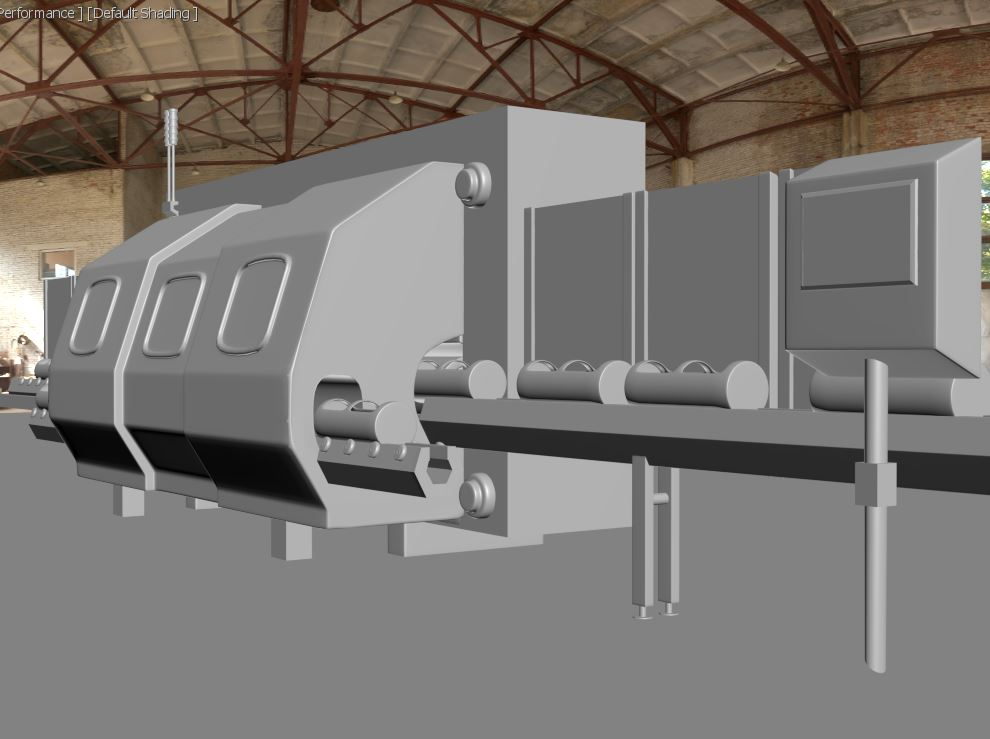

VR Sim
Biopharma HPP Process Trainer
A 3D model of a High Pressure Processing (HPP) system built for biotech and biopharma manufacturing training — the equipment class featured in her 2025 ICVARS conference paper on multimodal VR and digital-twin training.



Overview
High Pressure Processing equipment is specialized, expensive, and not something most trainees get unsupervised access to. This project rebuilt an HPP system in 3D at a level of detail suited to a digital-twin-style training tool for process operators.
The work fed directly into research co-authored with faculty on multimodal VR and digital-twin training for specialized process equipment in biotech/biopharma manufacturing.
Want to see the research behind it?
Visit Spextra (NSF) →